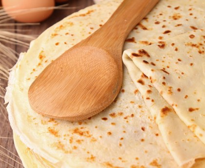
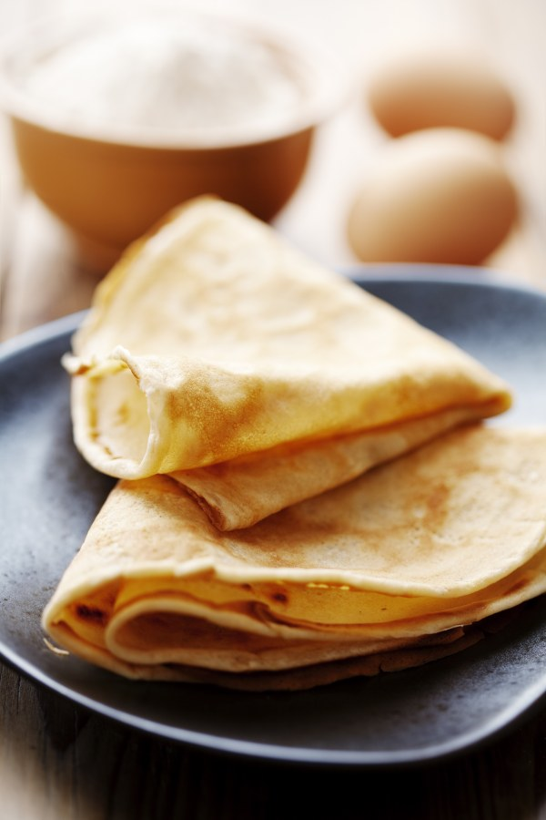
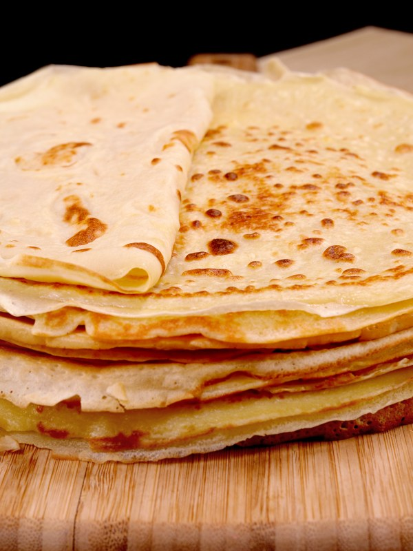

Pâte à crêpes simple
Selon nos informations, cette recette est compatible avec le régime suivant : végétarien
TEMPS TOTAL : 17 MIN



Ingrédiants
- • 5 oeufs
- • 500 g de farine
- • 1 litre de lait demi-écrémé
- • 3 cuillères à soup d'huile
- • 1/2 verre de bière
Préparation
Etape 1
Dans un saladier verser la moitié de la farine, puis rajouter les oeufs un à un, ensuite un peu de lait et de farine puis à nouveau du et ainsi de suite.
Etape 2
Enfin rajouter l'huile et la bière.
Etape 3
Laissez reposer 1 heure, votre pâte est prête.